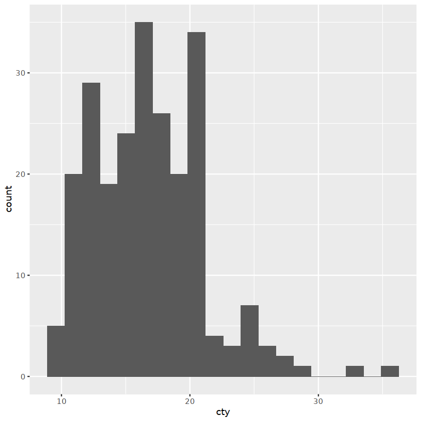

---
params:
tissue: Muscle
group:
- group0
- group1
- group2
p_cutoff: 1e-8
title: "LeafcutterMD Analyses - GTEx `r params$tissue`"
author: "Chao Dai"
date: "updated `r Sys.Date()`"
format:
html:
code-fold: true
toc: true
jupyter: r41
---library(tidyverse)
library(data.table)
library(yaml)── Attaching packages ─────────────────────────────────────────────────────────────────────────────────────────────────────────────────────────────────────────────────────────────── tidyverse 1.3.1 ──
✔ ggplot2 3.3.6 ✔ purrr 0.3.4
✔ tibble 3.1.7 ✔ dplyr 1.0.9
✔ tidyr 1.2.0 ✔ stringr 1.4.0
✔ readr 2.1.2 ✔ forcats 0.5.1
── Conflicts ────────────────────────────────────────────────────────────────────────────────────────────────────────────────────────────────────────────────────────────────── tidyverse_conflicts() ──
✖ dplyr::filter() masks stats::filter()
✖ dplyr::lag() masks stats::lag()
Attaching package: ‘data.table’
The following objects are masked from ‘package:dplyr’:
between, first, last
The following object is masked from ‘package:purrr’:
transpose
head(mpg)| manufacturer | model | displ | year | cyl | trans | drv | cty | hwy | fl | class |
|---|---|---|---|---|---|---|---|---|---|---|
| <chr> | <chr> | <dbl> | <int> | <int> | <chr> | <chr> | <int> | <int> | <chr> | <chr> |
| audi | a4 | 1.8 | 1999 | 4 | auto(l5) | f | 18 | 29 | p | compact |
| audi | a4 | 1.8 | 1999 | 4 | manual(m5) | f | 21 | 29 | p | compact |
| audi | a4 | 2.0 | 2008 | 4 | manual(m6) | f | 20 | 31 | p | compact |
| audi | a4 | 2.0 | 2008 | 4 | auto(av) | f | 21 | 30 | p | compact |
| audi | a4 | 2.8 | 1999 | 6 | auto(l5) | f | 16 | 26 | p | compact |
| audi | a4 | 2.8 | 1999 | 6 | manual(m5) | f | 18 | 26 | p | compact |
ggplot(mpg) + geom_histogram(aes(cty), bins =20)